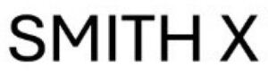

Trade Mark Journal No.2025/022 30 May 2025
WO0000001854327 (3,9,14,18,25,26)
Office of origin: Italy
Date of International Registration:29 January 2025
Date of designation in the UK:
29 January 2025

The trademark consists of the words "SMITH X" anyway written.
International priority date claimed: 31 July 2024
(Italy)
(302024000123508)
- Class 3
- Eau de Cologne; toilet water; scented water; shoe cream; creams for leather; polishing creams; shoe polish; oils for toilet purposes; ethereal oils; oils for perfumes and scents; polishing preparations; perfumery; perfumes; air fragrancing preparations; shoe polish and creams; shoe cream; body fragrances; leather polishes; essential vegetable oils; shoe polish applicators containing shoe polish; aromatics for fragrances; aromatics for perfumes; aftershave cologne; colognes, perfumes and cosmetics; shoe and boot cream; eau de parfum; extracts of perfumes; fragrances; fragrances for personal use; shoe cream; essential oils for use in the manufacture of scented products; fragrance preparations; leather and shoe cleaning and polishing preparations; perfumery and fragrances; natural perfumery; synthetic perfumery; perfumery, essential oils, cosmetics, hair lotions; perfumery, essential oils; liquid perfumes; body sprays; scented body spray.
- Class 9
- Spectacle cases; spectacle chains; spectacle cords; spectacle lenses; spectacle frames; spectacles; sunglasses; smartglasses; cases for sunglasses; eyewear cases; protective spectacles; sports eyewear; eyewear pouches; chains and cords for sunglasses; cords for sunglasses; cases for spectacles and sunglasses; lenses for sunglasses; frames for sunglasses; frames for spectacles and sunglasses; fashion eyeglasses; parts for spectacles.
- Class 14
- Shoe jewellery; hat jewellery; watch bands; clock cases; watch chains; jewellery; wristwatches; clocks and watches, electric; clocks; jewellery rolls; jewellery boxes; presentation boxes for watches; jewellery hat pins; paste jewellery; jewellery made of semi-precious materials; jewellery made of precious metals; jewellery made of plastics; plastic bracelets in the nature of jewelry; watch chains; jewel chains; watch clasps; leather watch straps; watch straps of plastic; metal watch bands; cases for watches and clocks; jewellery fashioned from non-precious metals; clocks and parts therefor; jewel pendants; jewellery made of crystal; jewellery made of glass; jewellery chains; jewellery charms; scarf clips being jewelry; jewelry cases; men's jewelry; women's jewelry; children's jewelry; automatic watches; digital clocks; digital watches with automatic timers; mechanical watches; jewellery watches; sports watches; parts for watches; jewellery boxes and watch boxes.
- Class 18
- Trunks; bags; saddlebags; beach bags; bags for sports; purses; handbags; adhesive tags of leather for bags; sew-on tags of leather for clothing; labels of leather; umbrellas; travelling bags; suitcases; shoulder bags; travel baggage; slouch handbags; small clutch purses; handbags made of leather; ladies' handbags; wallets, not of precious metal; luggage; carry-on bags; leather bags and wallets; bags made of imitation leather; make-up bags sold empty; knitted bags; wallets; cosmetic purses; clutch bags; leather for shoes; backpacks; leather wallets; leather suitcases.
- Class 25
- Clothing; footwear; headwear; dresses; shirts; hats; skirts; sweaters; pants; trousers; slippers; sandals; shoes; training shoes; outerclothing; boots; heels; footwear uppers; ankle boots; men's clothing; suits; children's wear; shorts; sweatpants; mountaineering shoes; leather shoes; casual footwear; sneakers; shoe soles; jumpsuits; ladies' clothing; clothing for men, women and children; blazers; blue jeans; footwear for women; women's shoes; footwear for men; men's shoes; baby shoes; casual footwear; sports shoes; children's footwear; footwear for babies; socks; casual shirts; coats for men; coats for women; waist belts; women's suits; men's suits; headscarves; sweat shirts; winter gloves; men's boots; women's boots; boots and shoes.
- Class 26
- Buttons; stud-buttons; zip fasteners; zippers for bags; fastenings for clothing; clasps for bags; charms, other than for jewellery, key rings or key chains; belt clasps; buckles for bags; shoe fasteners; shoe buckles; shoe hooks; shoe trimmings; shoe eyelets; eyelets for clothing; pins, other than jewellery; shoe laces; hooks and eyes; zipper pulls; belt buckles of precious metals; rivet buttons; ornamental novelty buttons; shirt buttons; buttons for clothing; buttons, hooks and eyes, pins and needles; metal fasteners for footwear; belt buckles not of precious metal; clothing buckles.
DE POLI ANDREA
Representative: CERVATO PIERGIOVANNI, Galleria Europa 3 , I-35137 PADOVA, ITALY